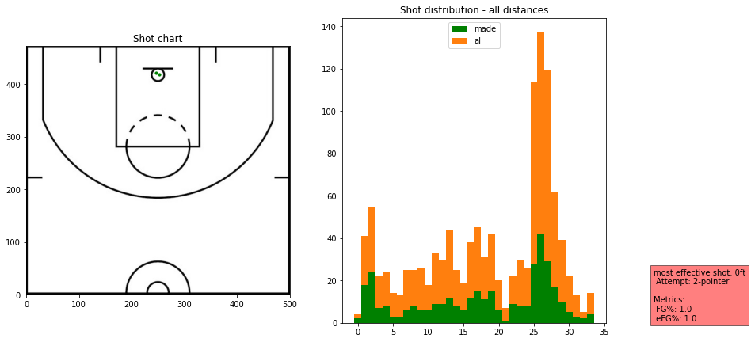
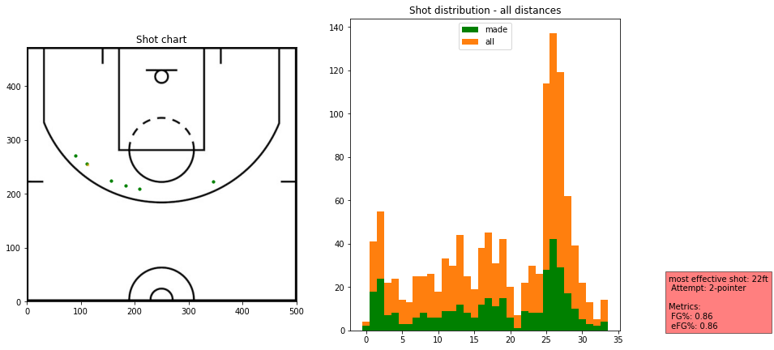
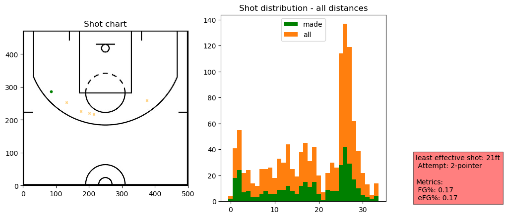
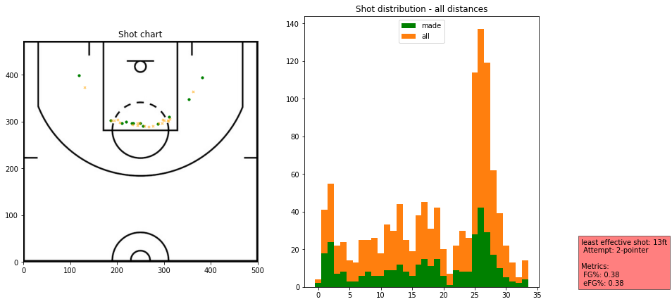

#hide
from shot_chart.core import *Shot Chart
Python module to plot NBA shot chart data and distributions for players and teams and some utilities.
This file will become your README and also the index of your documentation.
Install
pip install shot_chart
How to use
We first create a pandas dataframe from the source data.
shots_2019 = make_df(untar_data(URLs.SHOTS_2019))Listing teams for the season
list_teams(shots_2019)0 New Orleans
2 Toronto
203 LA Lakers
204 LA Clippers
369 Houston
371 Washington
563 Utah
724 Detroit
896 Charlotte
897 Sacramento
1076 Minnesota
1077 Philadelphia
1248 New York
1250 Orlando
1418 Oklahoma
1419 Portland
1587 Phoenix
1588 Golden State
2117 Dallas
2307 Memphis
2309 Chicago
2649 Denver
3000 Brooklyn
3874 Milwaukee
4562 San Antonio
5436 Indiana
5606 Boston
5951 Atlanta
6863 Miami
6864 Cleveland
Name: team, dtype: objectListing players who took at least 1 shot for a particular team
list_team_players(shots_2019, 'Portland')| shots_by | count | |
|---|---|---|
| 2 | CJ McCollum | 1356 |
| 5 | Damian Lillard | 1344 |
| 4 | Carmelo Anthony | 781 |
| 7 | Hassan Whiteside | 702 |
| 0 | Anfernee Simons | 532 |
| 6 | Gary Trent | 440 |
| 10 | Kent Bazemore | 322 |
| 11 | Mario Hezonja | 217 |
| 14 | Rodney Hood | 172 |
| 16 | Trevor Ariza | 159 |
| 13 | Nassir Little | 151 |
| 15 | Skal Labissière | 147 |
| 1 | Anthony Tolliver | 117 |
| 9 | Jusuf Nurkić | 109 |
| 18 | Zach Collins | 68 |
| 3 | Caleb Swanigan | 43 |
| 8 | Jaylen Hoard | 32 |
| 17 | Wenyen Gabriel | 31 |
| 12 | Moses Brown | 10 |
Plotting team shot distribution
houston = TeamShots(shots_2019,"Houston")houston.plot_shots()
houston.plot_shots(date_range=((2020,1,3), (2020,1,11)))
Please check the extra options when using the plotting functions
portland_20191125 = TeamShots(shots_2019,"Portland")portland_20191125.list_game_ids(2019,11,25)| game_id | winner | loser | |
|---|---|---|---|
| 46637 | 201911250CHI | Portland | Chicago |
portland_20191125.plot_shots("201911250CHI")
Plotting player shot distribution
player_shots = PlayerShots(shots_2019,"Anthony Davis")player_shots.plot_shots()
dlo = PlayerShots(shots_2019,"D'Angelo Russell")dlo.plot_shots()
dlo.plot_shots(distance_limit=(16,26),attempt="2-pointer")
dlo.plot_effective(most_or_least="most")
dlo.plot_effective(most_or_least="most",exclude=["0ft"])
dlo.plot_effective(most_or_least="most",min_shots="auto",exclude=['2ft'])
dlo.plot_effective(most_or_least="least")
dlo.plot_effective(most_or_least="least",min_shots="auto")